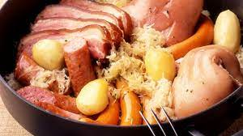

choucroute
Descritpion
La choucroute [ ʃukʀut] (de l'allemand : das Sauerkraut [ˈzaʊ.ɐ.kʁaʊt] Écouter ; en l'alsacien : Sürkrüt) est un mets composé de chou coupé finement et transformé par lacto-fermentation dans une saumure, généralement accompagné de garniture.
C'est un plat qui se consomme traditionnellement avec des variantes locales : en Allemagne, Autriche, Belgique, Bosnie, Bulgarie, Estonie, France, Hongrie, Lettonie, Lituanie, au Luxembourg, en Pologne, en Biélorussie, aux Pays-Bas, République tchèque, Roumanie, Russie, Serbie, Slovaquie, Suisse, dans le sud du Brésil, au Chili, aux États-Unis, en République populaire de Chine (et aussi, plus généralement, mais non de manière exclusive, par des populations issues des vagues d'immigration allemandes et germaniques, ainsi, par exemple, en Namibie1,2).
Ingrédients
- 1,5 kg de chou à choucroute crue
- 1 oignon
- 10/15 grains de genièvre
- 1 tablette de bouillon
- 500 g de rôti de porc fumé (filet de Kassler) ou de palette fumée environ
- 300 g de lard fumé environ
- 2 saucisses de Montbéliard (fumées) que l'on peut couper en deux
- 1 saucisse de Strasbourg par personne
- bouteille de Riesling
- 500 g de pommes de terre à chair ferme
Etapes
- Rincer la choucroute sous l’eau froide, l’égoutter, puis en verser la moitié dans un faitout.
- Incorporer ensuite le lard fumé et la palette, puis les recouvrir du reste de choucroute.
- Ajouter le saindoux, les gousses d'ail non pelées, le genièvre, le bouquet garni et l'oignon piqué.
- Arroser le tout de vin blanc et laisser cuire à couvert à feu doux pendant 1 heure.
- Ajouter les pommes de terre et poursuivre la cuisson pendant 50 minutes.
- Incorporer les saucisses, poursuivre la cuisson encore 10 minutes puis servir.